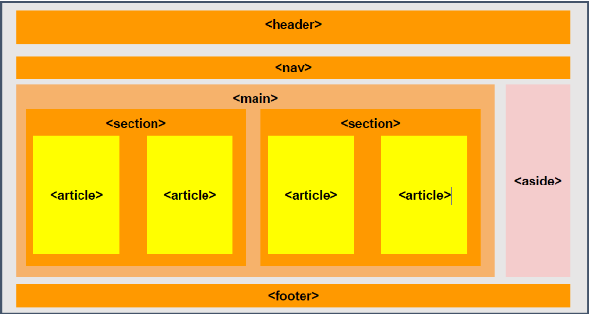

Capas

Header: Contiene logos, titulos principales, cuadros de busqueda
Nav: Se utiliza para establecer un menu de navegacion incluyendo enlace a otras paginas de la pagina web
Main: Se puede utilizar para agrupar el contenido principal de la pagina
Section: Se coloca debajo del nav o header y incluye el contenido de la pagina. Se puede dividir en varios bloque que llamamos articles
Article: Contiene informacion relevante para la pagina y sirve para dividirla en bloques
Aside: Sirve para incluir otros contenidos que no son esenciales para la pagina web
Display
Se puede presentar elementos de bloque como de linea y el elementos de linea como bloque
Propiedad: display, Valores: block, inline, inline-block
Ejemplo:
Elemento de Bloque
Elemento de Bloque
Elemento de Linea
Elemento de Linea
Elemento de Linea y Bloque
Elemento de Linea y Bloque
Float y Clear
Float: Sirve Para poner un elemento a la derecha o a la izquierda de su contenido padre
Valores: left,right
Clear: No admite elementos a su derecha o izquierda
Posicion
Permite establecer la posicion de un elemento
Valores: static,absolute,relative,fixed
Static: Posicionamento por defecto
Absolute: Permite a un elemento desplazarse segun el origen de coordenadas. Posicionamiento definido por los valores de atributos: top, left, bottom y right
Relative: Permite desplazarse segun su posicion normal. Atributos: Top y left
Fixed: Se ancla a es posicion aunque se desplace hacia abajo el documento